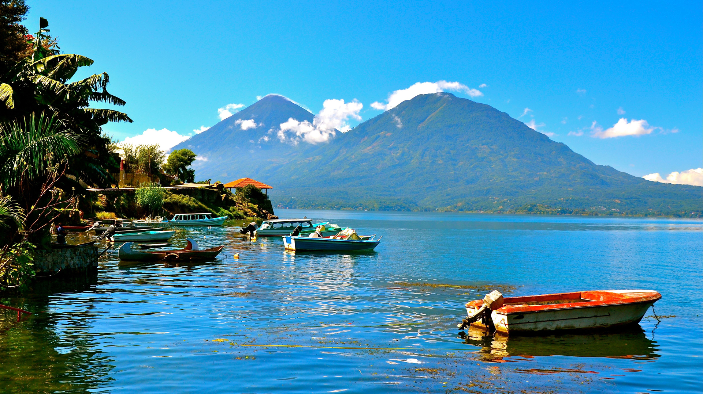
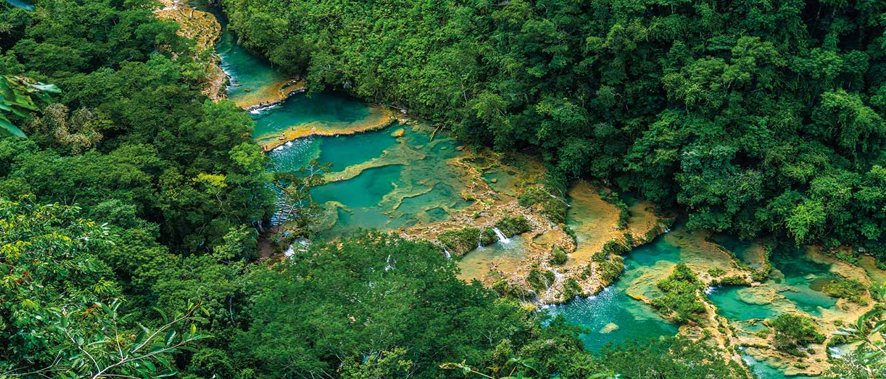
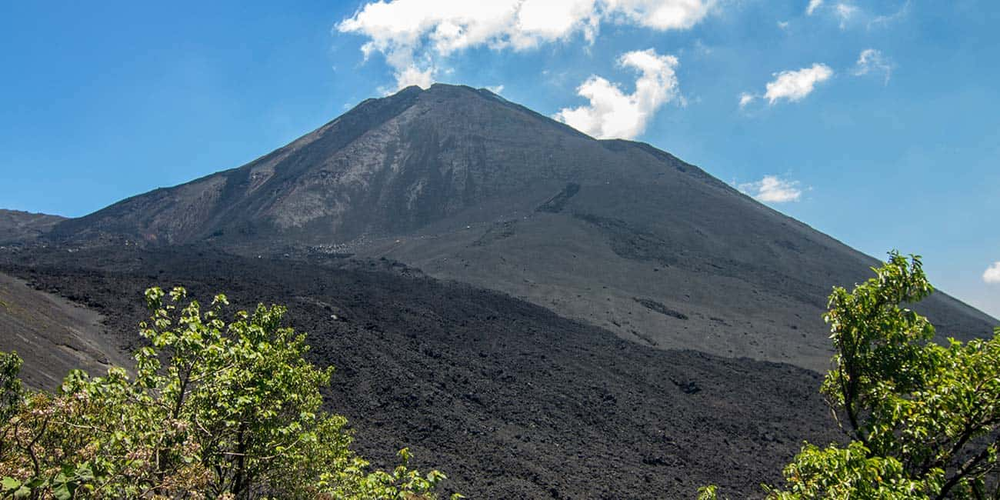

Antigua Guatemala

Ciudad colonial famosa por su arquitectura antigua, calles empedradas y volcanes. Es uno de los destinos más visitados del país.
Lago de Atitlán

Uno de los lagos más hermosos del mundo, rodeado de volcanes y pueblos indígenas. Ideal para turismo cultural y natural.
Tikal

Antigua ciudad maya en la selva de Petén, famosa por sus grandes pirámides y su historia prehispánica.
Semuc Champey

Un paraíso natural con piscinas de agua turquesa. Perfecto para nadar y disfrutar la naturaleza.
Volcán Pacaya

Uno de los volcanes más accesibles donde puedes ver lava activa y vivir una experiencia única.